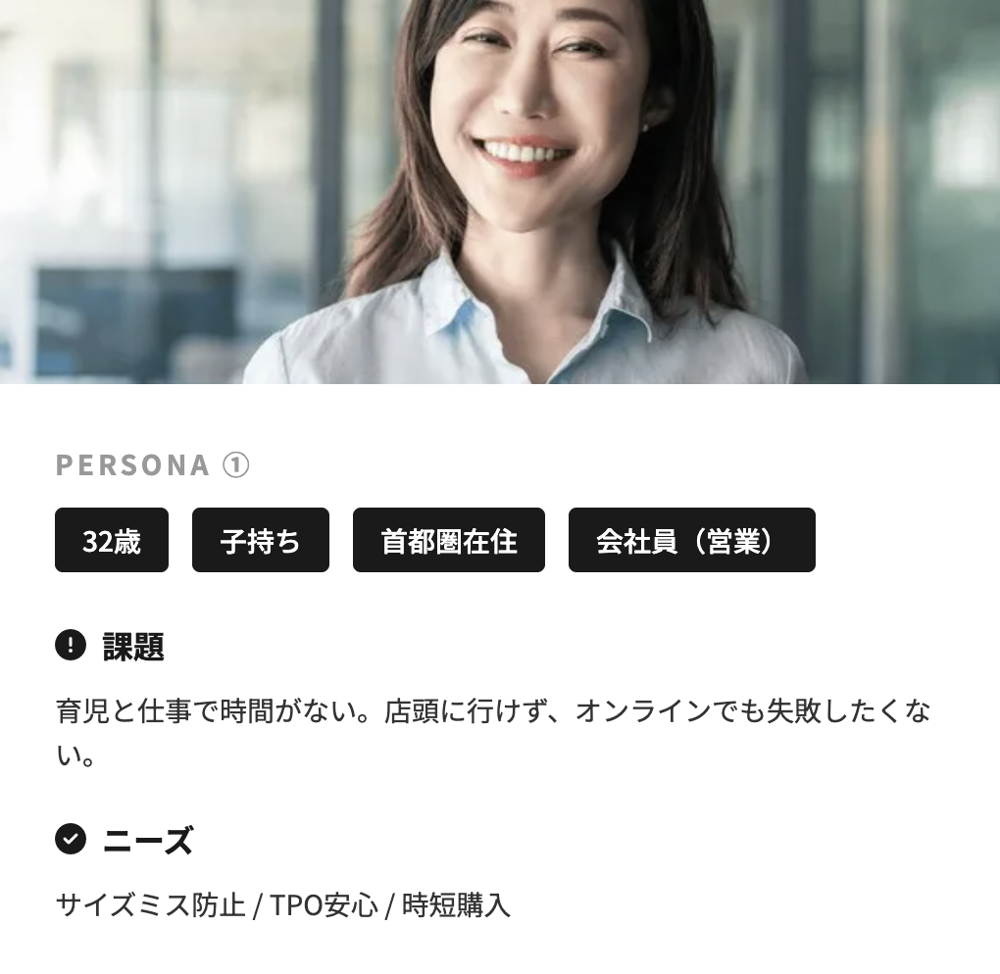
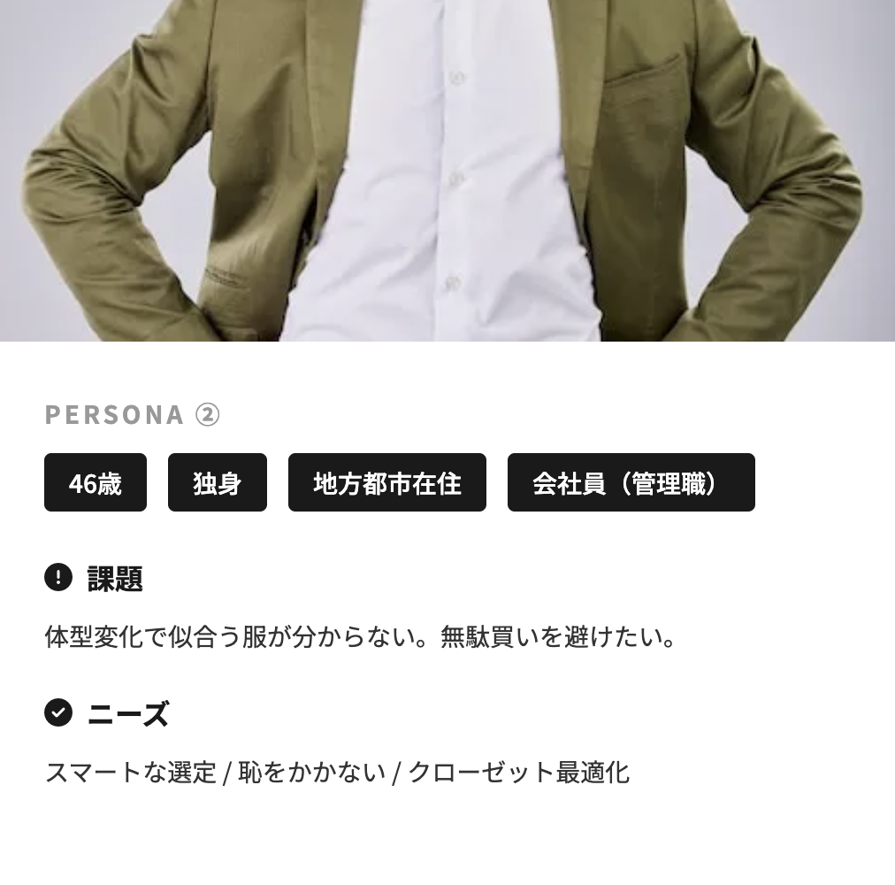
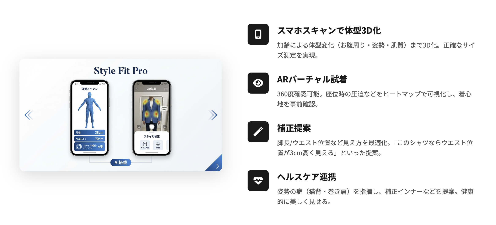
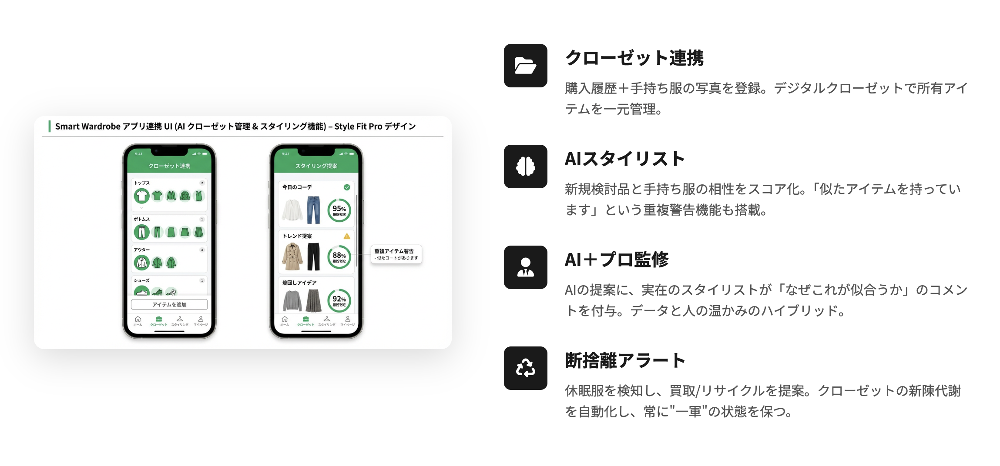
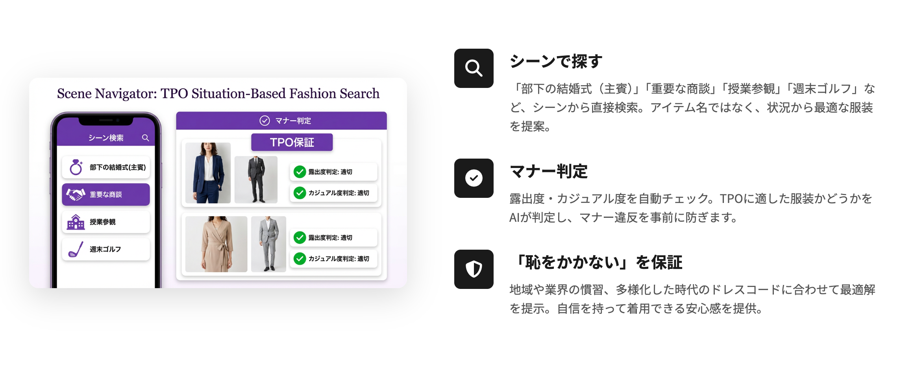
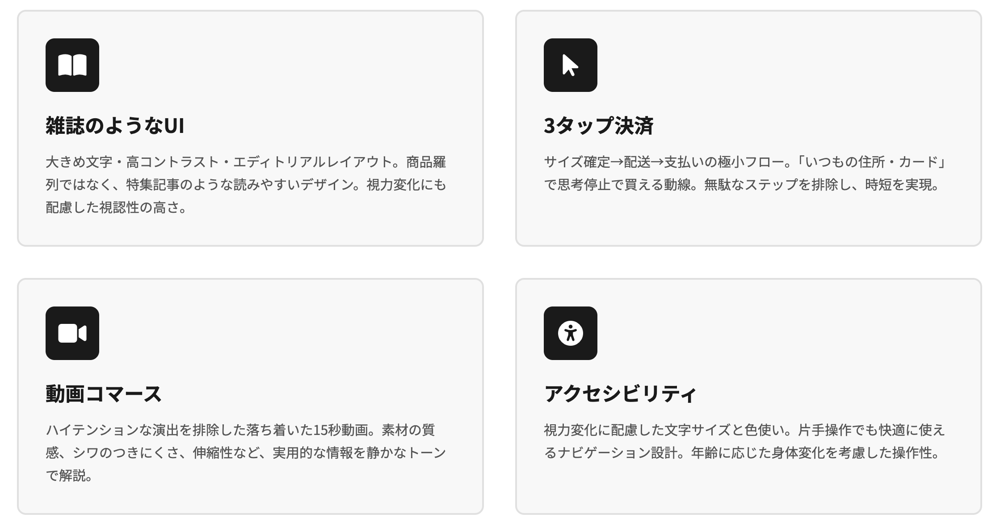
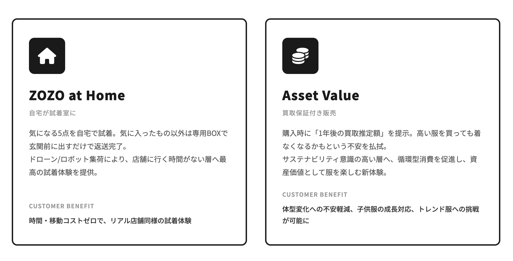

HOME
未来設定
ECサイトで購買するのが主流になったZOZOTOWN・5年後の未来について
グループテーマ
年代別に特化したZOZOTOWNのアプリ
5年後の2030年、ECが8〜9割で主流となり、リアル店舗が「ショールーム化」または「体験の場」となっている世界観。
MY THEME
「失敗しない」「恥をかかない」「時間を買える」
- 「失敗しない」→年齢による体型の変化・お産による体型の変化をカバーできる服がわからない
- 「恥をかかない」→TPOの制限が緩和化され多様性が認められる時代背景で、適切な服装がわからない
- 「時間を買える」→家庭や仕事で多忙な年齢層のため、無限の選択肢がある中から選ぶのが難しい
TARGET
- WHO?（誰に？）
- 30代〜59歳の「ミドル世代」
- 仕事や育児、介護に追われる「時間貧困」層
- 体型の変化により、昔の服が似合わなくなったと感じる層
- 家族全員の服を効率的に管理・購入したい層
- WHAT?（何を？）
- 「失敗しない」安心感と、「恥をかかない」身だしなみ
- 服を選ぶ・探す・悩む時間を短縮する「時短体験」
- 年相応かつ、程よくトレンドを取り入れたスタイル
- 子供服も含めた家族全体のファッション管理
- WHY?（なぜ？）
- 若作りはしたくないが、おじさん・おばさん化もしたくない
- 店舗に行く時間がない、または店員との会話が億劫
- 自分にお金をかけたいが、子供の教育費などで予算管理がシビア
- 子供の成長に合わせた服選びの手間を減らしたい
- HOW?（どのように？）
- AIによる骨格・体型診断に基づいた「似合う服」の自動提案
- 家族全員の服を一括管理・購入できるファミリー機能
- 試着なしでもサイズミスを防ぐ高度なバーチャルフィッティング
- 子供の成長予測に基づくサイズ提案や買い替えリマインダー
PERSONA


WHAT IS APP?
ZOZO EDIT & FAMILY
人生の主役世代に、専属の「編集者」を。
若年層向けの「探す楽しさ（ディグる）」とは真逆の、
「選ばなくていい快適さ（キュレーション）」を最優先したアプリです。
1. サービスのコア機能 (Service Features)
この世代特有の課題である「体型変化」・「TPO」・「時間短縮」・「子供を持つ親の視点」に特化した機能を提供します。
① 超・骨格＆体型補正AI「Style Fit Pro」
スマホスキャンで、単なるサイズ計測だけでなく「加齢による体型変化（お腹周り、姿勢、肌の質感）」までを3D化。
② 手持ち服との連携「Smart Wardrobe」
「手持ちの服と合うか」を判定し、無駄買いを防ぎます。
③ TPO特化型検索「Scene Navigator」
アイテム名ではなく「シーン」で検索し、マナー違反を防ぎます。
2. プロダクトとしての特徴 (UI/UX Design)
30〜59歳の視力変化や、多忙なライフスタイルに配慮したデザインです。
3. 独自の付加価値サービス (Premium Value)
「お金で解決できるならしたい」と考える層へのアプローチ。
CONCLUSION
「ファッション＝生活インフラ」
（面倒なことを解決してくれるもの）
5年後のZOZOTOWNは、単に服を買う場所ではない。
中年層が抱える「時間がない」「自信がない」という課題をテクノロジーで解決し、
彼らが仕事や家庭で輝くための自信を提供する「ライフスタイル・パートナー」へと進化。